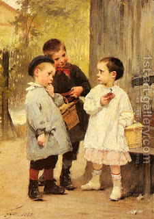

Bava Kamma 107 - People Are Not Brazen to Deny Loans Given to Them

One who admits that he owes a part of the loan, but not the complete amount, has to swear to this effect and after the oath in court he is not liable to pay the rest.
There is a presumption that a person is not brazen enough to deny his obligation to the face of the creditor, who did him a favor by loaning money without interest. If he partially admits, that is because he is trying to evade part of the claim until he has money. Therefore, Torah imposed an oath.
Later, people became more brazen, and the Rabbis imposed an oath for complete denial as well.